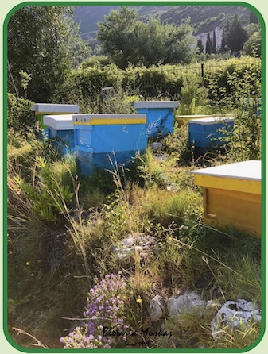
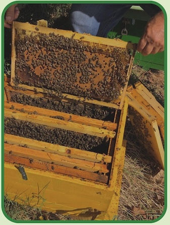
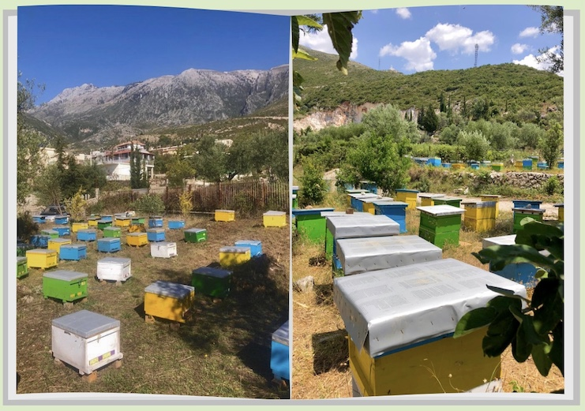
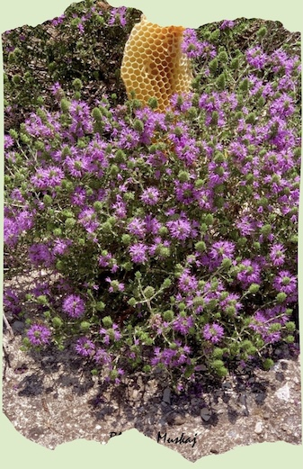
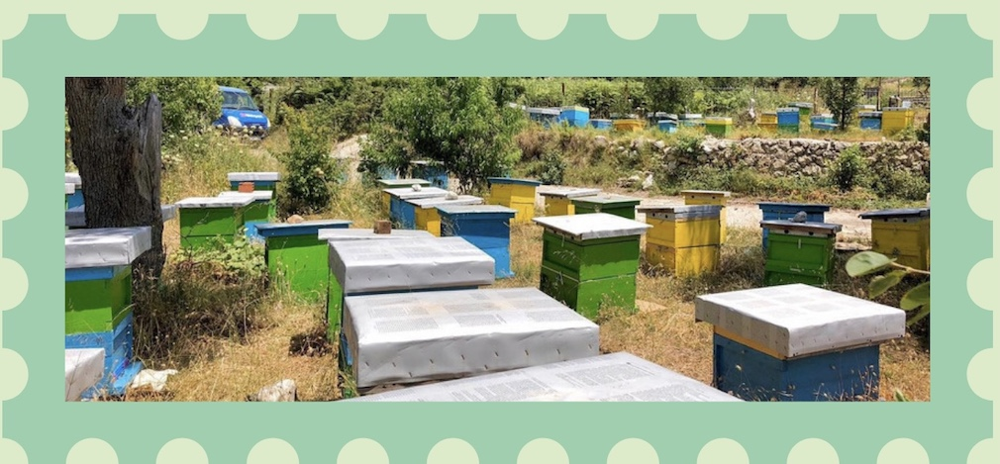

Parku i Bletaria Muskaj ndodhet prane zones se Dhermiut.
Ne ndryshim me mjaltin tradicional i cili ka efekte antibakteriale, mjalti yne ka efekte kuruese gjithashtu. Lulet te cilat bletet perdoren per me marre nektarin dhe qe ndodhen afer bletarise sone jane shume te rralla te cilat rriten vetem ne kete zone ne temeratura qe i kalojne 35 grade. Keto bime jane : thimar, millosfage,mersine.
Keto bime jane aq te pasura me efekte kuruese dhe mund te kalojne efektet e antibiotikeve qe ndodhen ne treg.
Efektet e ketyre bimeve ndodhen dhe ne mjalt nese ai eshte 100% natyral. Cilesia e mjaltit tone eshte e garantuar.



Bimet thimat, millosfage dhe mesine kane efekte :
- Antioxidante (parandalojne demtimin e qelizave)
- Antimikrobike ( parandalon ose eliminon efektet e mikrobeve duke fuqizuar sistemin imunitar)
- Antiparasitike (parandalon dhe zhduk parazitet
- Antivirale (ndihmon trupin ne luftimin e viruseve)
- Hepatoprotektive (parandalon demtimin et veshakve)
Keto bime jane shume te pasura ne veti mjeksore dhe perdoren per shume semundje si: diabeti, probleme me frymemarrjen, per te lehtesuar dhimbjet, per te qetesuar dhe ulur nivelin e stresit, probleme me sistemin digjestiv, parandaluar formin e mykut etj.
Keto bime jane aq te pasura me efekte kuruese dhe mund te kalojne efektet e antibiotikeve qe ndodhen ne treg.
Efektet e ketyre bimeve ndodhen dhe ne mjalt nese ai eshte 100% natyral. Cilesia e mjaltit tone eshte e garantuar.
Prandaj produktet tona jane dhe kuruese 🐝
